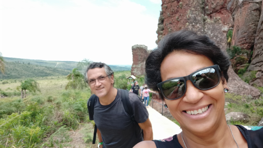
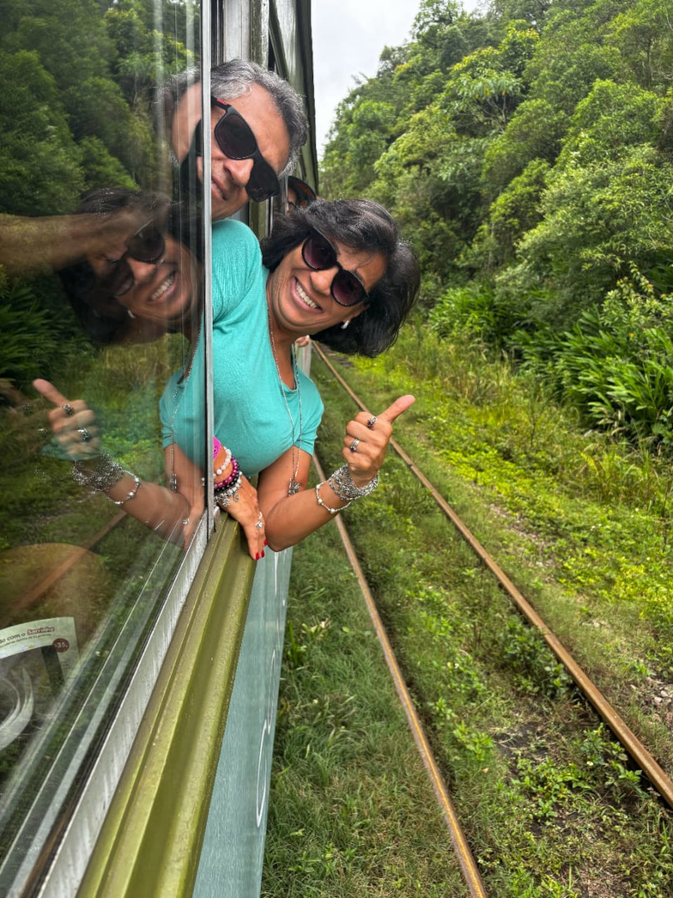

AMAPORÃ 2019
Estivemos em 2019 na casa da Teresa em Amaporã. Amaporã está intimamente ligada à cafeicultura, que se tornou a principal atividade econômica da região. Em 1948, famílias de agricultores começaram a plantar café em terras devolutas, e o povoado de Jurema foi formado. Em 1961, Jurema foi elevado à categoria de município e, um ano depois, mudou seu nome para Amaporã.
O Parque Estadual de Amaporã é uma área protegida que visa conservar a biodiversidade local e promover o ecoturismo. O parque oferece trilhas para caminhadas, áreas de camping e atividades educativas sobre a natureza. É um ótimo lugar para quem gosta de aventura e quer explorar a beleza natural do Paraná.
O ipê é uma árvore típica do cerrado brasileiro, conhecida por suas belas flores amarelas. O ipê mais alto do Paraná está localizado em Amaporã, no Parque Estadual de Amaporã. Esta árvore é um símbolo da riqueza natural da região e atrai muitos visitantes que vêm para admirar suas flores e a vista panorâmica do parque.
FOZ DO IGUAÇÚ 2019
Saímos de Amaporã e seguimos viagem para Foz do Iguaçú. Fomos até a Ciudad del Este no Paraguai, cruzamos a pé pela Ponte da Amizade. Adquirimos um pacote para visitar as Cataratas do Iguaçú, o Parque das Aves, o marco da tríplice Fronteira e a Usina Itaipu Binacional, além da usina visitamos também o museu do trabalhador que conta a história da construção da usina.
CURITIBA 2021
Parques visitados: Jardim Botânico, Parque Tanguá, Bosque Alemão, Torre Panorâmica.
Um passeio inrivél foi no Parque Estadual de Vila Velha, a cerca de 92 km de Curitiba e 25 km de Ponta Grossa. A região é conhecida por suas formações rochosas únicas, esculpidas ao longo de milhões de anos pela erosão eólica e pluvial.
Atrações Turísticas

Formações Rochosas: As formações rochosas dos arenitos são um dos principais atrativos turísticos da região. Essas formações naturais, esculpidas pela ação do vento e da chuva, lembram figuras de animais e paisagens surreais.
Trilhas: O parque oferece trilhas de diferentes níveis de dificuldade, incluindo uma trilha completa de 2.700 metros e uma meia trilha de 1.100 metros. Ambas proporcionam uma experiência única de contato com a
Importância Ambiental
O Parque Estadual de Vila Velha foi criado em 1953 e tombado pelo Patrimônio Histórico em 1966. Ele é uma das mais importantes unidades de conservação ambiental do estado do Paraná, protegendo uma área de 18 km² de formações rochosas classificadas como um dos sítios geológicos brasileiros pela SIGEP.
Outro passeio incrível foi para Morretes
O passeio de trem de Curitiba para Morretes é uma experiência inesquecível! Operado pela Serra Verde Express, o trem da Serra do Mar percorre uma das rotas mais bonitas do Brasil, conhecida por suas vistas deslumbrantes de montanhas, vales, rios, cascatas e desfiladeiros.
Destaques do Passeio:

Duração: A viagem dura aproximadamente 4 horas e 30 minutos.
Pontes e Túneis: O trem passa por 41 pontes e 13 túneis, sendo uma obra-prima da engenharia.
Categorias de Vagões: Há várias opções de vagões, incluindo Turístico, Boutique e Litorina de Luxo, cada um oferecendo diferentes níveis de conforto e serviços.
Serviços a Bordo: Dependendo da categoria escolhida, os passageiros podem desfrutar de lanches, bebidas, guias de turismo e até serviços de bordo exclusivos.
Passeios em Morretes: Ao chegar em Morretes, os visitantes podem explorar a cidade, conhecida por suas culinárias e belezas naturais.
Como Participar:
Reserva Antecipada: É recomendável fazer a reserva com antecedência, pois os lugares são limitados.
Horários de Saída: O trem sai da Rodoferroviária de Curitiba às 8h30 e retorna às 15h da estação de Morretes.
Esse passeio é considerado um dos melhores do mundo e é uma ótima maneira de conhecer a região e apreciar a natureza brasileira.